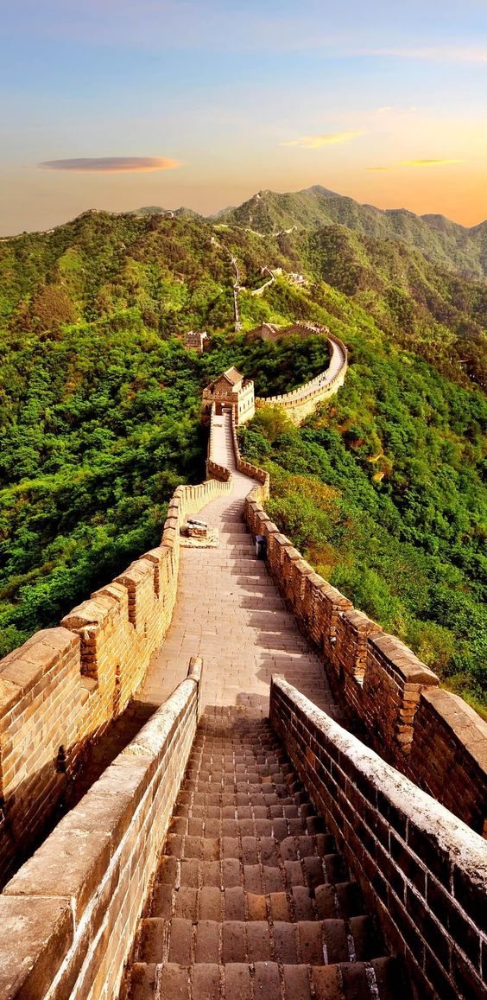

|  |
The Great Wall of China is a series of fortifications made of stone, brick, tamped earth, wood, and other materials, generally built along an east-to-west line across the historical northern borders of China to protect the Chinese states and empires against the raids and invasions of the various nomadic groups of the Eurasian Steppe. Several walls were being built as early as the 7th century BC; these, later joined together and made bigger and stronger, are now collectively referred to as the Great Wall. Especially famous is the wall built 220-206 BC by Qin Shi Huang, the first Emperor of China. Little of that wall remains. Since then, the Great Wall has been rebuilt, maintained, and enhanced; the majority of the existing wall is from the Ming Dynasty (1368-1644). Other purposes of the Great Wall have included border controls, allowing the imposition of duties on goods transported along the Silk Road, regulation or encouragement of trade and the control of immigration and emigration. Furthermore, the defensive characteristics of the Great Wall were enhanced by the construction of watch towers, troop barracks, garrison stations, signaling capabilities through the means of smoke or fire, and the fact that the path of the Great Wall also served as a transportation corridor. The Great Wall stretches from Dandong in the east to Lop Lake in the west, along an arc that roughly delineates the southern edge of Inner Mongolia. A comprehensive archaeological survey, using advanced technologies, has concluded that the Ming walls measure 8,850 km (5,500 mi). This is made up of 6,259 km (3,889 mi) sections of actual wall, 359 km (223 mi) of trenches and 2,232 km (1,387 mi) of natural defensive barriers such as hills and rivers. Another archaeological survey found that the entire wall with all of its branches measure out to be 21,196 km (13,171 mi). |